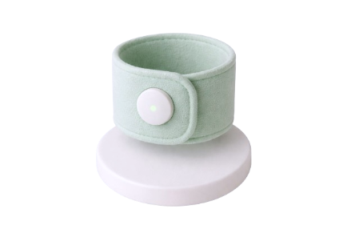

How Bundl Works — From Ankle to App
Medical-grade sensors. Bluetooth Low Energy. A companion app built for sleep-deprived parents. Here's how it all comes together.
Simple for Parents. Sophisticated Inside.
Four steps from setup to insight — and Bundl handles everything in between.
Wear
- Slips gently onto your baby's ankle
- Fits newborns through 24 months
- Tamper-resistant safety lock
- Soft velcro adjustment
Monitor
- BLE transmits live vitals to the app
- Tracks heart rate & SpO2
- Monitors temperature & motion
- Detects sleep stages continuously
Get Alerts
- Instant push notifications
- Alerts when readings fall outside normal ranges
- Calibrated to minimise false alarms
- Works through Do Not Disturb
Share Insights
- Export full health history in one tap
- Share formatted reports with your pediatrician
- Supports data-backed check-ups
- Secure & encrypted export
The Sensor Module
A single integrated unit — lightweight, enclosed in a waterproof casting, and built for continuous wear without discomfort.
- PPG Sensor — Photoplethysmography for heart rate and SpO2 measurement
- NTC Thermistor — Continuous skin temperature monitoring, accurate to ±0.3°C
- 3-Axis Accelerometer — Motion detection for activity and sleep stage analysis
- Bluetooth Low Energy 5.0 — Real-time data transmission, 30+ foot range
- AES-256 Encryption — Data encrypted before transmission, every time
- Li-Po Battery — 24–36 hours continuous use, 72 hours standby

Single integrated module — no loose parts. Non-detachable sensor for safety.
Every Reading That Matters
Bundl monitors the five vitals most relevant to infant health and SIDS awareness — continuously, from their ankle.
Heart Rate
Normal infant range: 100–160 BPM. Bundl alerts you if readings fall below 80 or exceed 200 BPM for sustained periods. Rolling 30-second averages smooth out natural variation.
Blood Oxygen (SpO2)
Healthy infant range: 95–100%. Low oxygen alerts trigger immediately if SpO2 drops below 90% — one of the most critical indicators in SIDS prevention research.
Skin Temperature
Normal range: 95.9–99.5°F. Alerts for unusual rises or drops. Detects early signs of fever and overheating — a recognized SIDS risk factor.
Motion & Activity
Detects movement frequency and intensity. Distinguishes restful stillness from prolonged inactivity. Flags unexpected motionless periods over 20 seconds during sleep.
Sleep Stage Detection
Combines heart rate and motion data to classify awake, light sleep, and deep sleep phases — building a clear picture of your baby's sleep architecture over time.
Battery & Device Health
Low battery alerts keep the monitor always charged. Device status visible at a glance in the app. Never miss a reading due to a dead battery.
Alerts That Actually Matter
Bundl's thresholds are based on established pediatric guidelines — designed to flag genuine concerns, not generate unnecessary anxiety.
💗 Heart Rate Alert
Alert triggers when heart rate falls below 80 BPM or exceeds 200 BPM for more than 15 consecutive seconds during a sleep period.
💧 Blood Oxygen Alert
Alert triggers immediately when SpO2 drops below 90% — a threshold associated with oxygen desaturation requiring parental awareness.
🌡️ Temperature Alert
Alert triggers when skin temperature rises above 99.5°F or falls below 95.9°F — consistent with early fever or hypothermia risk indicators.
🤸 Inactivity Alert
Alert triggers after 20 consecutive seconds without detectable movement during a detected sleep period — prompting a visual check.
Alert thresholds are based on general pediatric guidelines and are for informational awareness only. Bundl is not a medical device. Always consult your pediatrician if you receive an alert or have any health concerns about your baby.
Understanding Your Baby's Sleep
By combining heart rate patterns with motion data, Bundl classifies your baby's sleep into three stages — giving you real insight into how your baby is actually resting.
Deep Sleep
Heart rate slows and motion is minimal. Critical for growth and brain development. Bundl tracks the duration and quality of each deep sleep period.
Light Sleep
Heart rate slightly elevated, occasional movement. Natural REM-adjacent phase. Normal transitions between stages are completely expected.
Awake Periods
Higher heart rate and frequent motion. The app logs awake periods to help identify feeding windows, sleep readiness, and overtiredness signals.
Last Night's Sleep Summary
Your data travels securely
AES-256 encrypted at every step — from band to app to your care team.
Sharing Data With Your Care Team
With one tap, export a formatted health summary to share with your pediatrician via email or a secure app link. More data means more informed care.
- AES-256 end-to-end encrypted data transmission
- Formatted reports compatible with pediatric review workflows
- Historical data export: daily, weekly, or monthly
- HIPAA-ready framework (future clinical compliance)
- Supported by pediatric professionals during development
- Multi-child profiles — manage every little one in one place